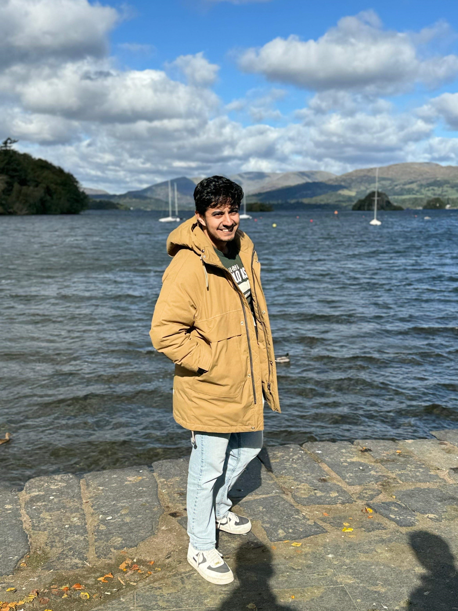

Back in the industry at AWS working on agentic solutions. The student phase of life is over?

Akhil Agnihotri
I am currently an Applied Scientist at AWS in the Agentic AI org. Prior to this, I was a PhD student at the University of Southern California advised by Prof. Rahul Jain. During my PhD, I was supported by the Capital One PhD Fellowship and the Annenberg Fellowship, and was fortunate to collaborate with Google DeepMind, Netflix, and Qualcomm.
Prior to my PhD, I was a Quantitative Researcher at JPMorgan Chase & Co. working towards market-aware revenue outlier detection. During my undergraduate years, I was fortunate enough to work with Prof. Ding Zhao at Carnegie Mellon University on indoor SLAM and LiDAR sensor optimization. During Summer '18, I interned at Indira Gandhi Centre for Atomic Research and worked on closed-loop control algorithms for nuclear reactor safe robots.
I obtained my B.E. in Mechanical Engineering from BITS Pilani in 2020.News
-
Jan 26
-
Dec 25
Defended my PhD thesis after long and exciting 4.5 years. Grateful to everyone involved!
-
May 25
Excited to start at Netflix as a Research Scientist Intern. Hoping to get a free subscription :)
-
May 24
Started at Qualcomm as a Machine Learning Scientist Intern. Off to 'Birthplace of California'!
-
May 23
Started at Google as an AI Resident. Off to the Bay!
-
Apr 21
Awarded the Annenberg Fellowship by the University of Southern California. Excited for the journey!
-
Oct 20
Started at JPMorgan as a Quantitative Researcher. Hello Mumbai!
-
Aug 20
Attending Research School hosted by the Max Planck Institute, Germany.
-
Jul 20
Graduated from BITS Pilani with my Bachelor's.
-
Jun 19
Received Travel Grant for conducting research at CMU. To the mecca of robotics!
-
Mar 19
Awarded the DAAD-WISE scholarship to conduct research at TU Munich. Danke Deutschland!
-
May 18
Summer internship Indira Gandhi Center for Atomic Research - one of India's largest nuclear reactor establishment.
-
Aug 16
Started my undergraduate life at BITS Pilani with focus on mechanical engineering and data science.